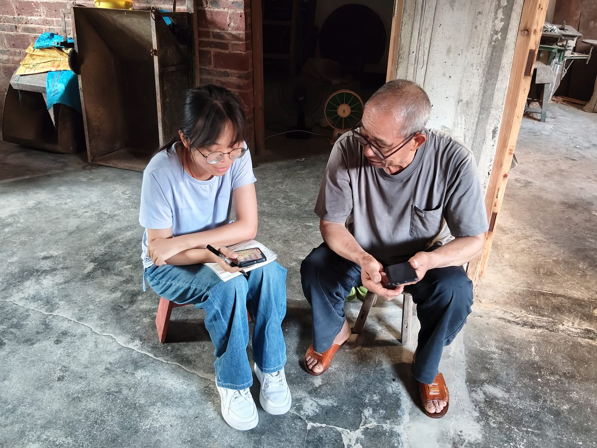
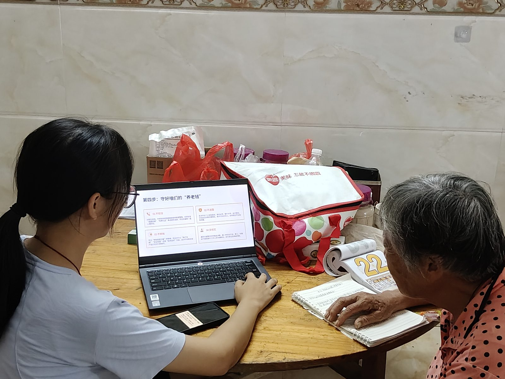
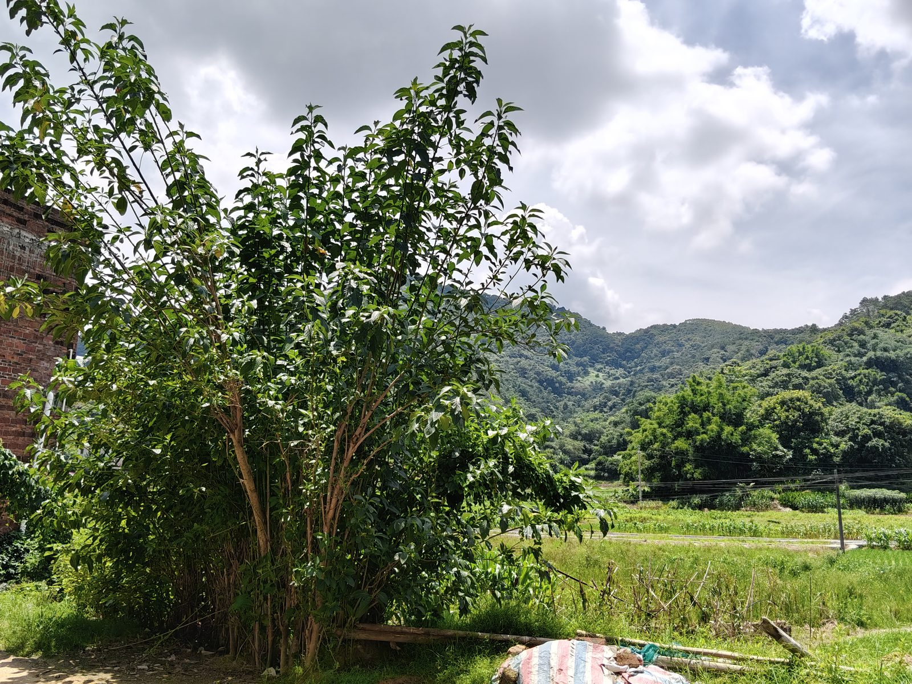

2026 年 8 月 5 日至 13 日，中央民族大学实践团队一行 9 人走进广西壮族自治区玉林市兴业县山心镇联和村， 以「推普 + 普法 + 数智赋能」融合模式，通过入户走访、公益课堂、AI 语音输入教学、短视频创作工坊与村级成果展演， 为乡村语言生活与数字生活注入青年力量。
实践概况
项目档案、团队构成、九天行程与活动意义
调研发现
联和村语言生态、四类人群需求与课堂数据反馈
实践影像
十八帧真实记录，见证推普与数智赋能的活态实践
👈 点击左侧导航，解锁这场乡村语言实践之旅
实践概况
中央民族大学 2026 年大学生暑期社会实践团队 · 文脉传承专题
团队构成
团队共 9 人，覆盖电子信息、计算机、教育学、经济学、蒙古语言文学、纳米材料等多专业， 设队长 1 名、宣传组 2 人、调研组 2 人、教学组 2 人、后勤联络组 2 人。 全体队员普通话水平均达二级甲等及以上，具备语言教学、数字工具应用、跨民族沟通与新媒体创作的复合能力。
三阶段活动安排
第 2–3 天 入户走访，开展推普国情问卷调研，绘制推普标语、布置普法主题墙
第 4–5 天 普法推普小课堂 + 数智赋能课堂（数字博物馆沉浸式教学、AI 语音输入法、反诈技能）
第 6–7 天 短视频创作工坊：带领青少年拍摄家乡风物普通话短片
第 8 天 补访未覆盖农户，整理问卷，筹备展演
第 9 天 村级普通话短视频成果展演 + 线下总结分享会
活动现实意义
文化传承 · 铸牢中华民族共同体意识
以推广国家通用语言文字为核心，创新性将数字技术融入文脉传承，让村民听懂、会说、愿意使用普通话，打通各民族、各村屯交流壁垒，增进中华文化认同。
乡村发展 · 助力乡村振兴与基层治理
普通话能力帮助村民顺畅对接外出务工、线上农产品销售与政务办理；数字技能课堂与反诈教学弥合「数字鸿沟」，夯实平安乡村建设基础。
青年成长 · 落实高校实践育人目标
多专业交叉团队深入民族聚居乡村一线，在调研、教学、数字工具应用与跨文化沟通中锤炼能力，将课堂知识转化为乡村服务实效。
长效推广 · 打造可复制乡村推普模式
产出调研手册、数字教学操作指南与系列短视频，形成「高校大学生 + 数字技术 + 乡村推普普法」长效服务模式，供学校与基层持续复用推广。
调研发现
入户走访 · 问卷调查 · 课堂反馈 · 深度访谈
实践地概况
广西壮族自治区玉林市兴业县山心镇联和村，地处桂东南丘陵地带，是一个以汉族为主、多民族杂居的传统农业村落。 青壮年劳动力普遍外出务工，常住人口以中老年务农群体和留守儿童为主体，形成典型的「空心化」乡村人口结构。 村内日常交流以当地方言（玉林白话）为主，普通话使用频率较低，老年群体中普通话听说能力十分有限。
教育部数据显示，当前全国普通话普及率为 80.72%，但中西部部分乡村地区的青壮年农牧民仍无法熟练使用普通话交流。 联和村的情况正是这一宏观格局的微观映照：普通话虽已进入学校教育与基层治理，却尚未内化为村民日常生活的语言。
普通话使用场景图谱
教育场景
学校是青少年接触普通话的核心场景，「学校讲普通话、回家讲方言」的双语生活模式。
主要使用对外公务
村干部汇报工作、银行存取款、医院就诊等公共服务场景，被动使用普通话。
功能性使用日常社交
邻里串门、集市买卖、红白喜事以玉林白话占绝对主导，「方言为体、普话为用」。
方言主导短视频渠道
抖音、快手等平台增加「听」普通话的机会，但「听得懂」与「说得出」之间仍有断层。
新兴渠道四类重点人群语言需求
| 人群类型 | 语言使用现状 | 核心需求 |
|---|---|---|
| 留守儿童 | 在校用普通话，回家切换方言 | 巩固课堂所学，避免双语混淆 |
| 留守老人 | 大多不会说 / 听不懂普通话 | 就医办事时能基本沟通 |
| 留守妇女 | 有一定基础但缺乏练习 | 子女教育、与务工丈夫视频通话 |
| 残疾人 | 信息弱势叠加语言障碍 | 获取政策信息、独立办事 |
表 1 · 联和村四类重点人群语言需求分析（据入户走访整理）
普通话熟练使用率：年龄递增，掌握率递减
※ 根据入户走访观察估算绘制，仅作趋势示意
四个核心发现
普通话掌握水平偏低，群体差异显著
能熟练使用普通话的以在校青少年为主，中老年绝大多数仍以方言为日常交际语言，呈「年龄递增、掌握率递减」趋势。
使用场景集中于学校与对外交流
普通话停留在「工具性」层面——仅在需要与外部世界沟通时才使用，尚未内化为村内日常交际的常规语言。
智能手机困难集中于高频刚需场景
「充话费」被列为最普遍的操作困难，语音输入、线上办理医保社保、网购等也是高频困难点。60–69 岁老年群体仅 36.22% 具备数字素养初级水平。
方言主导的环境是推普最大结构性障碍
留守妇女和务工人群学习意愿最高，但绝大多数村民没有固定学习渠道——缺乏日常操练的场景和对象。
课堂反馈数据
| 评估节点 | 能听懂大部分内容的比例 | 说明 |
|---|---|---|
| 课前预测 | 约 52% | 村民对法律术语普遍感到陌生 |
| 课后反馈 | 约 92% | 普通话口语化表达 + 方言对照解释后大幅提升 |
表 2 ·「语言 + 法律」融合教学前后理解率对比
| 访谈问题 | 核心反馈 |
|---|---|
| 模式是否适合长期开展？ | 适合后续长期在咱们村持续开展，推普与数智赋能两者相辅相成，贴切村民实际需求 |
| 学好普通话和手机能带来哪些便利？ | 外出务工、线上就医、电商直播等方面更便利 |
| 哪项活动实用性最强？ | 一对一手机教学接受度最高 |
表 3 · 村干部对「推普 + 数智赋能」融合模式的反馈
推普实践
课堂 · 数智 · 创作 · 长效机制，四位一体的融合实践
一、推普 + 普法课堂
以《国家通用语言文字法》与民法典乡村相关法条为核心内容，用普通话宣讲婚姻家庭、土地权益、劳动保障等法律知识， 每讲一个知识点先普通话朗读、再方言解释、再带读跟练，实现「语言 + 法律」双向赋能。
- 从「被动听」到「主动问」：一位 50 多岁妇女课后主动询问：「我儿子在外面打工，老板拖欠工资，用普通话怎么去劳动局说？」——当教学与村民实际需求结合，学习动机由外部驱动转向内部驱动。
- 反诈四原则教学：「不轻信、不透露、不转账、多核实」，结合国家反诈中心 APP 实操演示，帮助村民建立基本防范意识。
二、数智赋能课堂
围绕「视觉适配 → 语音交互 → 生活服务 → 安全保障」四个维度，形成从基础设置到实用技能再到安全防护的递进式教学体系。
长辈模式
图标放大、文字加粗，系统字体调大后微信、短信等所有应用同步变大，解决「字小看不清」。
AI 语音输入法
用普通话对着手机说话即可自动转字，成为村民练习发音的「隐形教练」，潜移默化引导调整发音。
微信充话费
精准回应「充话费」这一最大痛点，重点教学核对手机号码与充值记录查询两个关键环节。
国家反诈中心 APP
下载注册并开启「来电预警」，与普法课堂反诈内容呼应，实现从「知」到「行」的闭环。
「就这么简单？以后不用跑镇上了！」 —— 68 岁阿公在指导下第一次独立完成手机话费充值后
三、短视频创作工坊
带领联和村青少年用手机拍摄家乡风物、农业日常等主题的普通话短片，创作全程贯穿「听、说、读、写」训练： 用普通话撰写脚本、录制配音、添加字幕，让青少年从普通话的「被动接受者」转变为「主动输出者」。
「第一次用普通话给自己的视频配音，觉得普通话挺有用的，能让更多人看到我们村。」 —— 参与创作的青少年
团队在村内举办村级普通话短视频成果展演，邀请村民代表与村干部共同观看。不少老年村民第一次在屏幕上看到孙辈用普通话讲述家乡故事，既惊喜又自豪。 村干部表示：「这些视频可以留在村里，以后放给大家看，让更多人知道普通话怎么说、有什么用。」
四、长效机制建设
交付《乡村推普数智赋能操作手册》
内含 AI 语音教学流程、APP 推荐、反诈指南等，交付村委会长期使用。
建立线上帮扶微信群
实践结束后持续提供远程答疑，形成「实地实践 + 线上长效服务」模式。
普通话短视频留存村委
本土化短视频既是教学载体，更是营造村内普通话语言环境的文化资源。
「小手牵大手」传帮带
青少年教长辈发微信、用支付、反诈科普，通过青少年带动家庭、辐射社区，形成推普涟漪效应。
问题与对策
基于九天实地调研的问题梳理与对策思考
实践中发现的六大问题
普通话使用场景化、代际差异明显
「课堂讲普通话、回家说方言」的语言切换困境普遍存在，中老年村民「听得懂、说不出」，方言主导的语言生态短期难以根本改变。
留守儿童缺少生活化练习场景
家中缺乏使用普通话的引导者与陪伴者，社区缺少专门为青少年设计的普通话练习场域，孩子们缺的不是意愿，而是稳定、友好、生活化的语言练习环境。
数字工具降低门槛又形成新门槛
AI 语音输入帮助部分村民跨越文字输入障碍，但老年群体面临「不会用、不敢用、用不起」的数字使用困境——操作步骤记不住、界面复杂找不到、字体太小看不清。
反诈教育需与真实操作同步
单纯知识讲解效果有限，真正有效的反诈教育需要在村民实际使用手机的过程中手把手教学——识别风险、规避陷阱是行为习惯的养成，短期实践难以完成。
推普资源本地化适配不足
主流教材与数字工具面向通用场景设计，缺少与村民生活、生产、语言习惯结合的本地化内容，场景化语言需求（务工表达、农产品推介、线上办事）很少得到针对性回应。
短期实践持续性与成果复用有限
九天实践难以形成持续效应，线上帮扶受村民参与意愿与操作能力限制；调研报告、操作手册、短视频等成果如何被基层主体有效复用，仍缺乏明确机制保障。
六大发展建议
建立分层分类的乡村推普课程
因材施教：面向老年人侧重日常口语对话，面向中年农户开发电商带货实训，面向青少年融入本土民俗文化，面向村干部提升政策宣讲表达能力。
构建「村校 / 村委 + 高校」常态化机制
暑期线下集中教学，其余学期线上直播、社群打卡持续开展；建立志愿者轮换接续制度，把一次性社会实践转化为可持续的乡村公共服务供给。
制作低门槛的数智推普工具包
整合音频素材、跟读小课件、反诈普法短句，微信小程序即可打开，多用集市交易、田间劳作、邻里沟通的本地生活对话范本，打通「最后一公里」。
推动推普、普法与数字生活任务融合
把反诈知识、普法条文、办事指引改编成普通话朗读材料，学中用、用中学，让村民切实感受到学好普通话能解决生活里的实际问题。
用本土短视频与青年参与增强传播
发动村内青年、返乡大学生作为本土创作主体，用普通话讲述本村历史民俗、介绍农产品，以熟悉乡土场景为载体，潜移默化带动全村学普通话。
建立轻量化成效评估与反馈机制
不设书面考试，采用口语访谈、简单问卷定期收集反馈，村委与高校志愿者动态调整课程与工具包素材，解决实践成果复用不足问题。
队员手记
九位成员，从不同视角记录他们在联和村的所见、所感、所思
负责团队整体协调、任务分配与进度跟进。认识到语言能力与群众日常交流、信息获取、社会参与密切相关，数智工具能有效降低信息获取与表达门槛。最大的收获，是对团队协作和项目管理有了更深入的认识。
统筹入户走访与现场拍摄。面对老年群体的语言与数字双重障碍，全程方言搭配普通话双语沟通，主动简化问卷、新增一对一教学。看到了乡村老人在时代发展中的困境，也被村民的热情善良深深温暖。
出发前梳理文献搭建理论框架，进村后让文献与田野对话。青年组「怕发音不好被人笑」的迟疑、七旬老奶奶「不会弄」的摆手，让干巴巴的统计数据变成有温度的注脚，也让结论有了方向。
将民法典法条口语化并配以方言对照解释，课堂从沉默到活跃。数智课堂教授长辈模式、AI 语音输入与微信充话费，68 岁阿公第一次在线充值成功后笑着拍手——「数字鸿沟」往往只差一个耐心的引路人。
因故未能随队，线上梳理队友发回的材料，将零散问题归类合并为六个代表性方面。通过文字与照片形成对联和村的立体印象，理解了乡村推普与村民生活方式、心理习惯、社区环境紧密缠绕的复杂性。
负责全部宣传视频的脚本撰写、素材统筹与后期剪辑。以青年、中年、老年三组访谈为核心叙事，为方言素材逐一核对翻译文本并规划字幕，重点呈现帮助乡村老人跨越数字鸿沟的暖心实践。
负责微信公众号推文制作与实践素材整理归档。掌握了不同年龄段人群的语言需求特点，学会针对不同群体制定推广策略；更深刻认识到推普不仅促进交流，更是推动乡村发展的系统工程。
梳理成员实地收集的访谈信息，提炼出分层课程、校地联动、工具包、任务融合、本土传播、评估反馈六条对策。认识到乡村推普存在供需错位、难以长期落地等问题，需结合群众实际需要加以改进。
负责制作实践记录网页，确定栏目结构，逐日整理照片、文字与手记并更新上线。虽未走进联和村，却用自己的方式参与了实践——把前方的汗水与笑容整理成可观看、可传播的数字记录。
实践影像
三组精选纪实，见证推普与数智赋能的活态实践（点击图片可放大）
一、8 月 13 日 · 傍晚现场

2026 年 8 月 13 日傍晚 · 实践现场纪实
二、8 月 13 日 · 夜间纪实

2026 年 8 月 13 日夜间 · 展演与分享时光
三、8 月 14 日 · 收尾记录

2026 年 8 月 14 日 · 实践收尾纪实